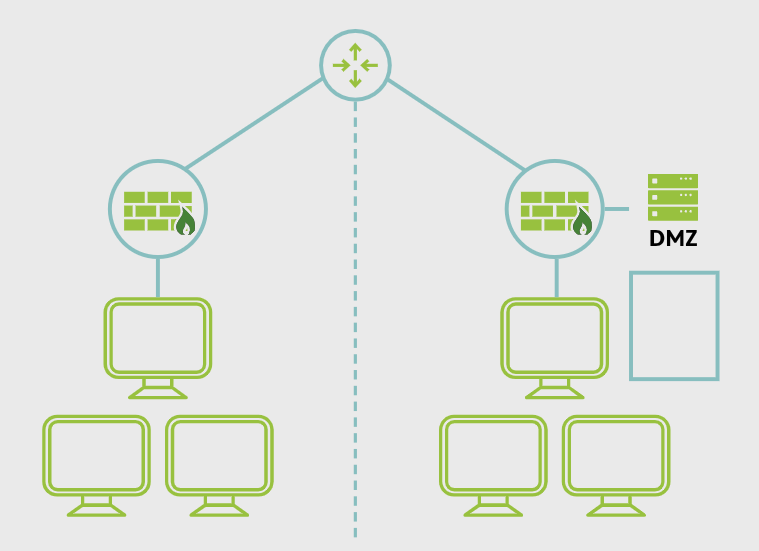
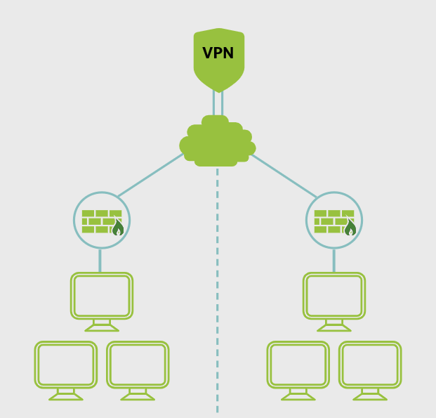

27. Network Design
Network Design
The goal of network design is to meet communication requirements and maintain efficient overall performance.
Network Segmentation
Network segmentation controls traffic by dividing the network into separate parts. This limits communication so devices only interact within their allowed segment.

DMZ (Demilitarized Zone)
A DMZ is a separate network area for systems that must be reachable from outside, such as public web or email servers. It stays isolated from the internal private network.

VLAN (Virtual Local Area Network)
A VLAN is a logical network segment created through switches. It separates traffic without changing the physical network layout.

VPN (Virtual Private Network)
A VPN creates a point-to-point communication tunnel over an untrusted network. It is used to carry authentication and data traffic securely when properly configured.

Defense in Depth
Defense in depth uses multiple layers of controls instead of relying on a single security measure.

NAC (Network Access Control)
NAC controls access to the network by enforcing security policies before allowing devices or users into the environment.

Main Idea
Network design improves performance and security by using segmentation, isolation, layered controls, and policy-based access.